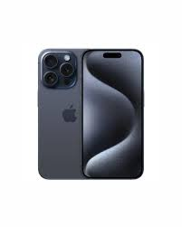
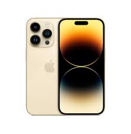
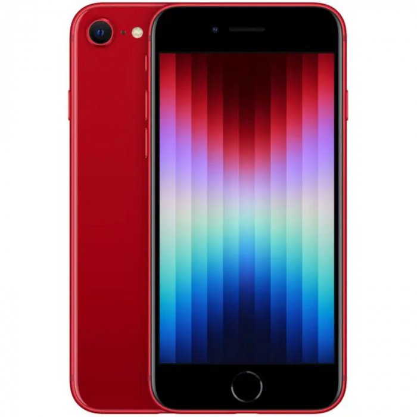

Review: Linha Apple
A Apple é referência em qualidade de construção, câmeras excepcionais e um sistema operacional (iOS) muito fluido e seguro. Os iPhones são ideais para quem busca durabilidade e alto desempenho a longo prazo.
Modelos Disponíveis

iPhone 15 Pro Max
O modelo mais avançado, com acabamento em titânio e processador A17 Pro para jogos e tarefas pesadas.

iPhone 14
Excelente custo-benefício para quem quer entrar no ecossistema da maçã com ótimas câmeras.

iPhone SE (3ª Geração)
Tamanho compacto com botão Home clássico, mas com desempenho de topo de linha.